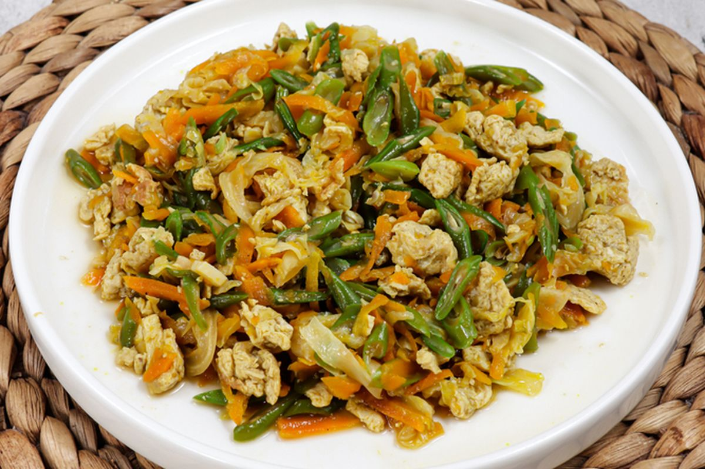

Tumis Tempe Orak-Arik Telur dan Sayuran
Resep sehat, tinggi protein, murah, dan mudah dibuat. Cocok untuk makan harian tanpa ribet.

Estimasi Waktu: 20 menit
Porsi: 2–3 orang
Biaya: Rp 10.000 – 15.000
Bahan-bahan
Protein Utama
- 1 papan tempe ±200 g, potong dadu kecil
- 2 butir telur ayam, kocok lepas
Sayuran
- 5 batang buncis/kacang panjang, potong 2 cm
- 1 wortel kecil, potong korek api/dadu
- Segenggam tauge (opsional)
Bumbu Iris
- 3 siung bawang merah, iris tipis
- 2 siung bawang putih, iris/geprek cincang
- 2 cabai merah keriting, iris serong
- 1 cabai rawit (opsional), iris tipis
Bumbu Saus (campur)
- 1 sdm kecap manis
- 1 sdm saus tiram (opsional)
- 1/2 sdt garam
- 1/4 sdt merica bubuk
- 50 ml air
Lainnya
- 2 sdm minyak goreng
Cara Membuat
- Goreng Tempe: Panaskan minyak, goreng tempe hingga setengah matang. Angkat dan tiriskan.
- Tumis Bumbu: Tumis bawang merah dan bawang putih hingga harum. Masukkan cabai, tumis sebentar.
- Masak Telur: Pinggirkan bumbu, tuang telur dan orak-arik hingga matang.
- Masukkan Sayuran: Masukkan wortel dan buncis, tumis 2–3 menit hingga sedikit layu.
- Satukan: Masukkan tempe dan tauge (jika pakai), aduk rata.
- Beri Bumbu: Tuang campuran saus, aduk hingga merata.
- Koreksi Rasa: Masak hingga bumbu meresap. Sesuaikan asin/manis sesuai selera.
- Sajikan: Nikmati hangat bersama nasi.
Tips & Variasi Sehat dan Murah
- Tambah protein dengan tahu goreng.
- Variasikan sayuran: kol, sawi hijau, jagung pipil.
- Lebih sehat: kukus tempe 10 menit bila ingin minim minyak.
- Untuk anak: hilangkan cabai agar tidak pedas.